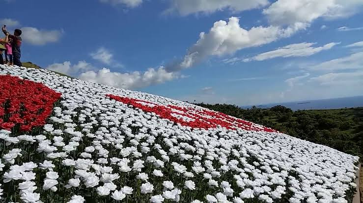

LINTAON PEAK & CAVE
- The City of Baybay is the origin of this wonderful tourist destination in the province of Southern Leyte. Over 16,000 red and white LED roses have been added to Lintaon Peak, which overlooks the stunning Camotes Islands and the surrounding waters.
- This was formally opened to the public on June 14 2017. The red roses form I Love Baybay which is what the city is promoting to tourists, that they discover Baybay and all its attractions. Many tourists are visiting the place especially at night, and the volume of people only decreases at around midnight
- Outdoor enthusiasts and those looking for adventure will enjoy camping in the vast, luxuriantly green highland. (If you intend to camp, you might want to bring coats because it becomes colder there around dawn; bonfires are not permitted.)
-
Although we advise arriving early to see the sunset, nighttime is the best time to see the thousands of roses. Sunsets are one of the most beautiful sights, especially when you see one from Lintaon Peak!